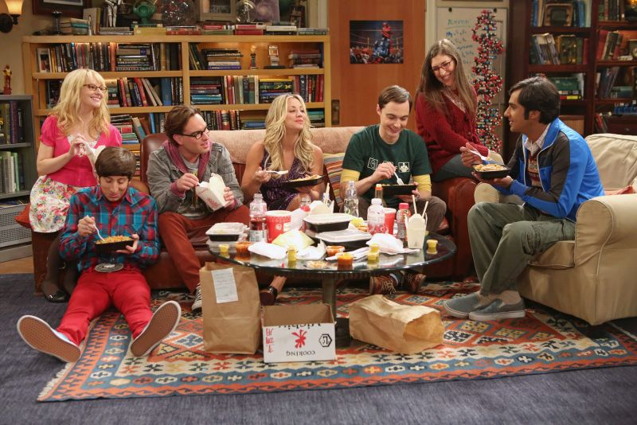
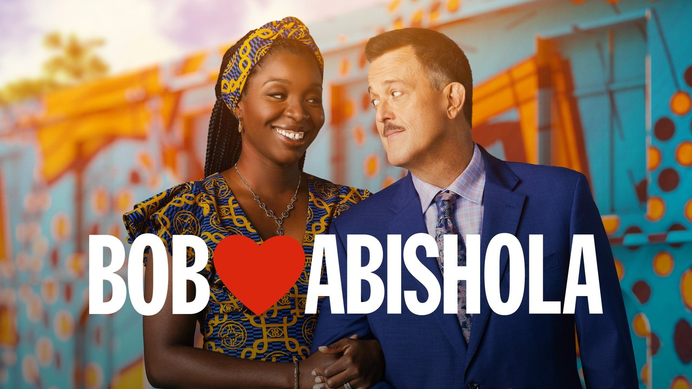
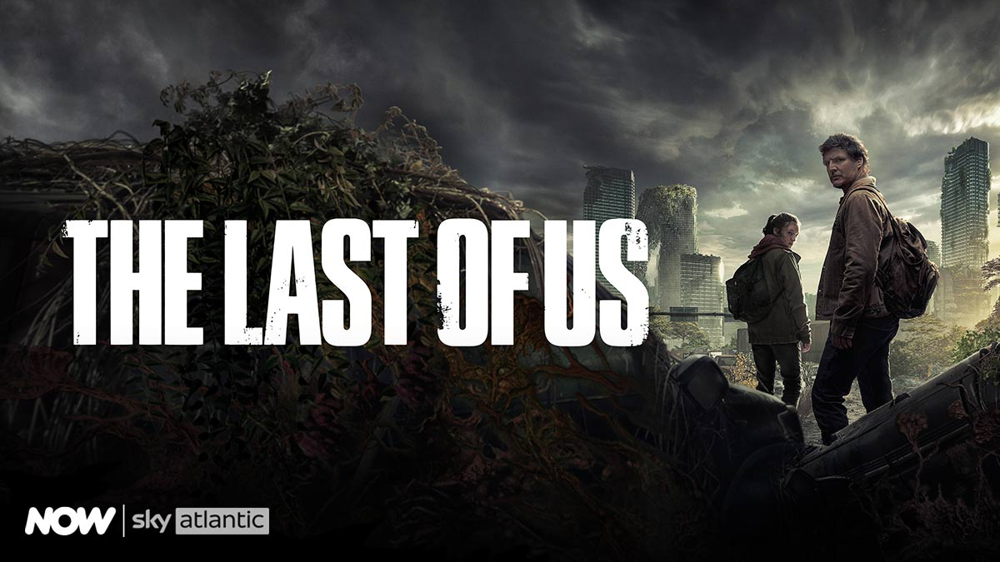

2 Broke Girls
Street-wise Max (Kat Dennings) doesn't expect much from the new waitress at her night job, a rich girl who has reluctantly joined the food service industry after a string of bad luck. But to her surprise, Caroline (Beth Behrs) is a woman of substance and just may be her ticket to success. The two strike up an unlikely friendship after Caroline discovers that Max can bake a mean cupcake, and the women decide if they can just wrangle up the start-up cash, they may have found their big break. Their co-workers at the diner are boss Han Lee, cook Oleg and cashier Earl.
Back to TopThe Big Bang Theory
Mensa-fied best friends and roommates Leonard and Sheldon, physicists who work at the California Institute of Technology, may be able to tell everybody more than they want to know about quantum physics, but getting through most basic social situations, especially ones involving women, totally baffles them. How lucky, then, that babe-alicious waitress/aspiring actress Penny moves in next door. Frequently seen hanging out with Leonard and Sheldon are friends and fellow Caltech scientists Wolowitz and Koothrappali. Will worlds collide? Does Einstein theorize in the woods?
Back to TopBob Hearts Abishola
Bob, a middle-aged compression sock businessman from Detroit, unexpectedly falls for his cardiac nurse while recovering from a heart attack and sets his sights on winning her over. Undaunted by Abishola's lack of initial interest or the vast differences in their backgrounds -- she's originally from Nigeria -- Bob is determined to win Abishola's heart in this comedic examination of immigrant life in America. From award-winning creator, executive producer and writer Chuck
Back to TopThe Glory
A young woman, bullied to the point of deciding to drop out of school, plans the best way to get revenge. After becoming a primary school teacher, she takes in the son of the man who tormented her the most to enact her vengeance.
Back to TopThe Last of US
Joel and Ellie, a pair connected through the harshness of the world they live in, are forced to endure brutal circumstances and ruthless killers on a trek across a post-outbreak America.
Back to Top